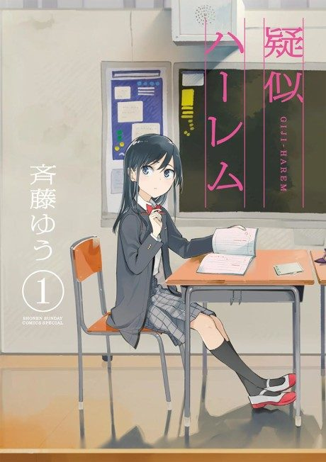

Anime
Anime
MangaPseudo Harem
疑似ハーレム
After the anime, read the manga from Chapter 66.
7.6AniList
—Animeter
12 epEpisodes
Is it worth pushing through?
Built from what visitors report across all 12 episodes.
Loading reports…Checking what other people said about this one.
Sign in above with your email to add your report.
More like Pseudo Harem
 Unclear8.3
Unclear8.3
 Manga Ch. 1148.1
Manga Ch. 1148.1
 Manga Vol. 47.5
Manga Vol. 47.5
 Manga Ch. 1528.3
Manga Ch. 1528.3
 Unclear7.7
Unclear7.7
 Manga Ch. 408.4
Manga Ch. 408.4